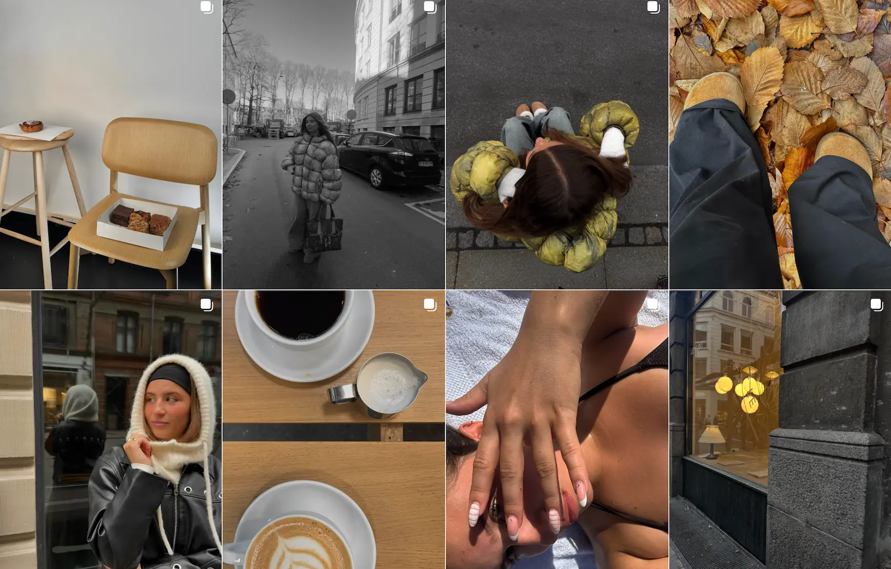

MIG OG MULTIMEDIEDESIGN

Mine uddannelses historik, er som mange andre en 9-klasses eksamen.
Efterfølgende tog jeg en stx, som jeg færdiggjorde i 2022 på Vestjysk
Gymnasium Tarm.
Igennem tiden har jeg haft en del forskellige jobs/arbejdspladser,
hvilket har givet mig en masse god erfaring. Ikke specifikt med
multimediedesign, men særligt med at arbejde som en del af et team.
Nedenfor har jeg lavet en lille oversigt over, mine forskellige jobs,
som man kan trykke ind på og læse lidt mere om.
ERHVERVSERFARING
Servicemedarbejder...
I min tid på gymnasiet arbejdede jeg i vores lokale supermarked Løvbjerg, først som opfylder, i kassen også til sidst som lukke-ansvarlig. Jeg arbejdede hos dem i sammenlagt 3 år.
Lager-medarbejder...
Da jeg var blevet student, skulle der ske noget nyt. Derfor greb jeg muligheden for at job, på et kølelager som jeg fik tilbudt af en tidligere kollega. Det var et fysisk hårdt arbejde, med meget dårlige arbejdstider. Her arbejdede jeg i ca. 8 måneder.
Hjemmeplejen...
Efter at have arbejdet på lager i lang tid, trængte jeg til nye udfordringer og derfor søgte jeg i hjemmeplejen. Som forventet var det en udfordring, men bestemt en god en af slagsen. Det var super fedt at mærke den forskel man gør for andre, men der var desværre ikke særligt mange timer at få. Her var jeg i 6 måneder, indtil jeg skulle ud på en længere rejse.
Afløser på plejehjem...
Da jeg kom hjem fra min rejse, vidste jeg at jeg ville arbejde med mennesker igen. Derfor søgte jeg stillinger på stort set alle områdets plejehjem, og jeg var så heldig at få tilbudt en stilling som afløser på Borris plejehjem. Her var der desværre heller ikke nok timer, så derfor blev jeg også ansat på et andet plejehjem, og var i en lang periode begge steder. Da jeg så flyttede til Aarhus, fik jeg igen arbejde på to nye plejehjem, som jeg også arbejdede på skiftevis.
Butiksassistent...
En dag besluttede jeg mig for at flytte til København, og i den forbindelse skulle jeg selvfølgeligt søge nogle jobs. Jeg havde på daværende tidspunkt arbejdet indenfor ældreplejen i 3 ½ år og følte for at prøve noget nyt. Derfor søgte jeg i flere forskellige forretninger, og endte med at få tilbudt en stilling i dametøjsforretningen Message, den som ligger i Rødovre centeret.
Mit første semester
Det jeg har fået ud af mit første semester er, at jeg har fået udvidet min måde at tilgå kreative processer. Mine kompetencer indenfor udvikling, design og formidling af et website, er blevet styrket helt enormt. Jeg har nu de nødvendige redskaber til at kunne kode, et site i VS Code. Og jeg kan bruge både html, css og java script til formålet.